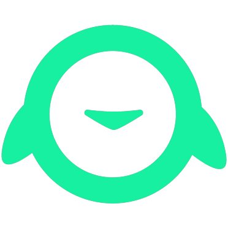

L'agenzia social per chi vuole numeri, non like
Fatti trovare. Fatti ricordare. Fatti scegliere.
Contenuti scritti da persone e girati dal vivo con te. Crescita 100% organica: niente pubblico comprato, solo persone che si ricordano di te — e ti scelgono.
Abbiamo lavorato con:
Videomaker per:
I 3 passaggi per trasformare i tuoi social.
Prima di pubblicare qualsiasi cosa, servono tre consapevolezze. È da qui che parte ogni risultato vero.
La tua attività ha DAVVERO bisogno dei social?
I social non aggiustano un business: lo amplificano. Se l'offerta funziona, la moltiplicano; se qualcosa si inceppa — prezzi, servizio, margini — lo mostrano a tutti. Troppo spesso si dà la colpa a Instagram quando i conti non tornano. Il primo passo non è pubblicare: è capire, con onestà, se i social sono la leva giusta per te adesso.
Richiedi un'analisi della tua attivitàScopri quanto potenziale ha la tua attività sui social
La maggior parte delle persone non pubblica per paura: paura del giudizio, di non essere all'altezza, della classica sindrome dell'impostore. Eppure ogni volta che un nostro cliente ha superato quel blocco e ha iniziato a metterci la faccia davanti alla telecamera — con la nostra guida — i risultati si sono moltiplicati. Il tuo potenziale non è nei follower che non hai: è nella storia che ancora non stai raccontando.
Scopri quanto può crescere la tua attivitàScopri quello che ti serve per non buttare tempo, soldi e credibilità online
Ogni giorno online senza una direzione è tempo, budget e reputazione che se ne vanno. Un profilo curato male comunica più di uno assente: dice "non ci tengo". In una call gratuita mettiamo a fuoco cosa ti serve davvero — e cosa no — così ogni euro e ogni ora vanno esattamente dove contano.
Prenota una call gratuitaTutto quello che serve.
Niente di superfluo.
Non ti serve "essere sui social". Ti serve che i social ti portino clienti. Ecco tutto quello che mettiamo in campo per farlo. Base a Roma, clienti in tutta Italia.
Gestione Social Media
Prendiamo in mano i tuoi profili e li facciamo lavorare per te, ogni giorno.
- Piano editoriale e pubblicazione costante
- Community management e risposta ai messaggi
- Report mensile con numeri veri e verificabili
Contenuti & Video
Shooting dal vivo, reels ed editing con un occhio formato tra cinema e reti televisive.
- Produzione foto e video professionale, di persona
- Reels e formati brevi pensati per l'algoritmo
- Esperienza con Sky, Mediaset, Rai e top creator
Strategia & Posizionamento
Prima di pubblicare qualsiasi cosa, capiamo chi sei, chi devi raggiungere e perché dovrebbero scegliere te.
- Analisi di mercato e dei competitor
- Tone of voice e identità riconoscibile
- Funnel organico: da sconosciuto a cliente fedele
Siti Web & Piattaforme Online
Il social porta l'attenzione, il sito la trasforma in business. Progettiamo entrambi perché lavorino insieme.
- Siti web eleganti, veloci e pensati per convertire
- Web app e piattaforme online su misura
- Un unico ecosistema digitale, coerente col tuo brand
Il nostro lavoro, da vicino.
Social, identità visive e siti: esplora ciò che realizziamo per i nostri clienti.

Ascoltiamo. Progettiamo.
Creiamo. Misuriamo.
Dall’analisi iniziale alla produzione dei contenuti, ogni passaggio parte dagli obiettivi della tua attività.
Scopri come lavoriamo ↗Due teste, un metodo.
Riccardo Romanazzo, strategia e social. Giacomo Dotti, video e produzione. Lavoriamo con te, dal primo confronto ai contenuti online.
Conosci il team ↗Raccontaci la tua attività.
Ti diciamo come farla crescere.
Analisi gratuita e senza impegno: guardiamo la tua situazione reale e ti rispondiamo entro 24-48 ore con un quadro concreto. Risponde una persona vera.
Le cose che ci chiedono tutti.
Cosa fa esattamente un'agenzia social media come Organiq?
Dove operate? Lavorate solo su Roma?
In quanto tempo vedrò i primi risultati?
Quanto costa lavorare con Organiq?
Devo apparire io nei contenuti?
Gestite tutto voi o serve il mio tempo?
Fate anche siti web e piattaforme?
Come misurate i risultati?

La tua attività ha più potenziale di quanto pensi.
Misuralo adesso: 8 domande, 2 minuti, risultato immediato. E se i social non sono la tua priorità, te lo diciamo onestamente.